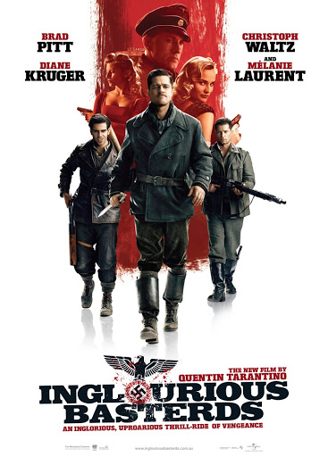

바스터즈: 거친 녀석들

2009 | 모험 | 독일
쿠엔틴 타란티노 감독
2차 세계 대전, 나치의 잔인하고 폭력적인 행태에 분개한 미군 알도 레인 중위는 당한 만큼 돌려준다는 강렬한 신념으로 바스터즈란 군단을 만든다.
어느날 그는 독일 전쟁 영화의 개봉에 히틀러도 참가한 소식을 듣고, 나치를 모두 쓸어버릴 계획을 세운다.
폭력과 복수라는 감정을 통해 관객에게 통쾌함을 안겨주는 쿠엔틴 타란티노의 작품입니다. 종종 매스컴에서 필요 이상의 폭력성을 사용한다는 비판을 받기도 하지만, 많은 영화팬들의 지지를 받고 있는 쿠엔틴 타란티노 작품 중에서도 오락성과 시원함으로 손에 꼽히는 영화입니다.